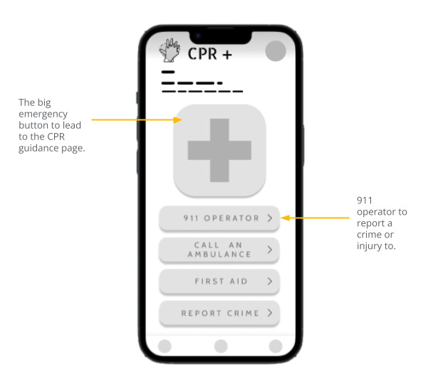
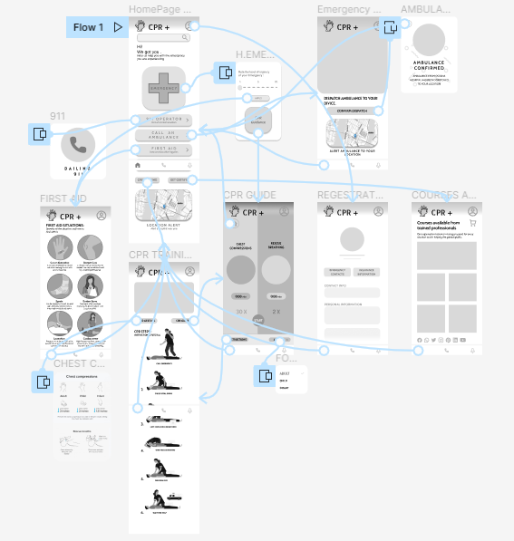
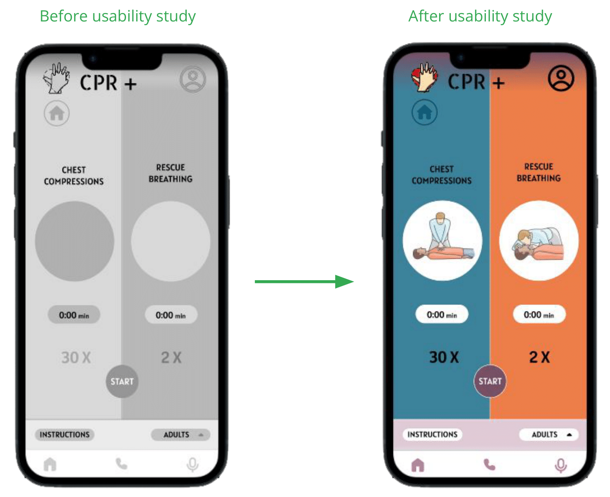
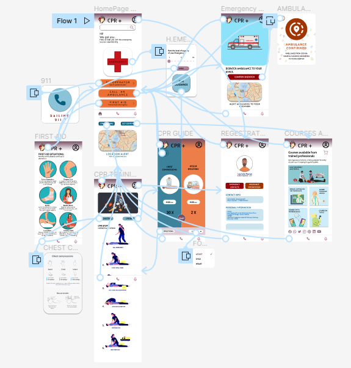

The Product
CPR + is an app that has been developed as a public safety app that will guide people in performing CPR and help notify the respective authorities of accidents or emergencies. The app will be accessible even in watch format to help people who are on the go and are in a panic state (through heart rate monitoring).
The problem:
In this day and age, the human body is prone to many external factors that can cause the body to go into shock or incapacitate it. Also, due to the sudden increase in population and the multiple recessions, crime rates have risen.
The goal:
CPR+ is an app that prioritises the health of the user and the people around the user by preparing and guiding users to be able to carry out basic medical procedures while they wait for the authorities to arrive. The app also strives to help people be more secure when travelling (specifically those who are ill or older) due to its locating function.
User research: summary
I used Red Cross website data on medical emergencies and their frequency to develop interview questions, which were then used to conduct user interviews. Most interview participants reported feeling unsafe in certain areas, but they didn't actively try to cure the fear or have an app that would help in these situations.
The feedback I received through my research made it very clear that users would be open and willing to travel freely with the knowledge of the app would help them with their safety and their ability to help people around them.
Unpredictability: Many accidents happen during times when most people are ill prepared or taken aback by the suddeness of the incident.
Accessibility: Platforms for medica health are not very user friendly and do not have features to accommodate people with disabilities.
Availability: Many platforms are not customised to guide the user or be able to provide the user eith useful information during an accident.
Persona
Problem statement:
Mona is a real estate agent, and she travels for her work. She requires an app that would allow her to be more secure about her health at her age.
“I often feel the need to learn to have emergency apps due to the unpredictable world we live in.”
Who Is She ?
Mona works as a real estate agent in Seattle. She has a very erratic schedule, and often her work takes her to various places around the city. She is visually challenged and often finds it hard to access many apps on her devices. This app will help her save lives in danger when she is on the go or help quickly alert the authorities or hospitals of her injury and location.
Needs Addressed by the App
To be able to deal with an emergency she faces. To not worry about security due to her age and her job. To be able to help others in need during an accident or emergency.
Pain points in exsisting apps
Due to lack of public health knowledge it is not always safe to travel at her age. To not worry about notifying people of her location. Apps do not accommodate people who are colour blind.
Paper Wireframes
I did a quick ideation exercise to come up with ideas for how to address the gaps identified in the competitive audit. My focus was specifically on CPR administration and notification of an emergency as efficiently as possible.
Prototypes and Mockups
Digital Prototypes
After ideating and drafting some paper wireframes, I created the initial designs for the CPR + app. These designs focused on guiding a user through the cpr process as well as connecting them to the necessary authorities.
Low Fidelity Prototype
The low fidelity prototype created was created on the Figma app.
To prepare for usability testing, I created a low-fidelity prototype that connected the user flow of performing CPR using the guide
Link To Lo-Fi Prototype »Mockups
Based on the insights from the usability studies, I applied design changes like providing graphics to the guidance page, adding the number of times as well as a timer to the feature.
High-Fidelity Prototype
The high fidelity prototype is accopanied by interactivity added in by Figma.
The high-fidelity prototype followed the same user flow as the low-fidelity prototype, including design changes made after the usability study.
Link To Hi-Fi Prototype »Usability study: findings
Home Access
People want easy access to the home button from any screen in the flow as the emergency options are easily accessible from it.
Ambulance
People want an ambulance confirm button to be able to have a buffer before asking for an ambulance.
Mockup Frames
Additional Research
-
Accessibility Considerations:
-Clear labels for interactive elements that can be read by screen readers. -Big bold buttons can be pressed during emergencies and when going through shock. -Contrasting colour schemes and big symbols are used for visually impaired or colorblind people to be able to use the app without confusion.
-
Impact made by the app:
Users shared that the app made the fear of being on the go alone more manageable as it acted as a proxy for another person. One quote from peer feedback was that "the CPR+ app helps provide security as it tracks location and is an easy connection to help."
-
What I learned:
I learned that even though the problem I was trying to solve was a big one, diligently going through each step of the design process and aligning with specific user needs helped me come up with solutions that were both feasible and useful.
-
Next steps for the project:
-Conduct research on how successful the app is in guiding users to perform CPR and provide any information regarding the procedure. -Add more educational resources and courses for users to learn about first aid from trained professionals. -Provide easier ways to access the app (through smart watches) to help older people with their own health.